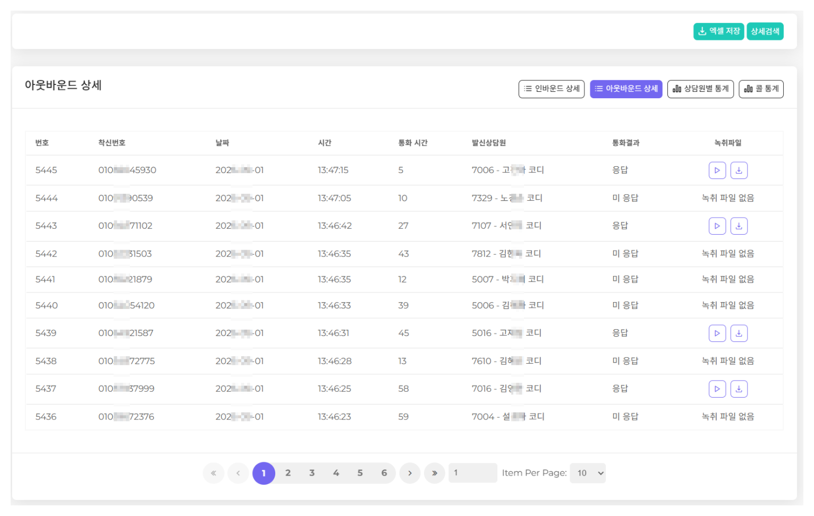

말로 한 약속을 확인할 방법이 필요하기 때문입니다. 주문 내용이 달라졌다거나 안내를 못 받았다는 이야기가 나올 때, 녹취가 있으면 확인하면 끝나고 없으면 분쟁이 됩니다. 금융·보험처럼 녹취 보관이 의무인 업종도 있습니다. 지오테스는 전 통화 자동 녹취와 조건 검색을 기본으로 제공합니다.
모든 통화를 남기거나, 정해둔 조건의 통화만 남깁니다.
기간, 상담원, 고객 번호, 통화 상태로 찾습니다. 파일 이름을 뒤질 필요가 없습니다.
프로그램을 설치하지 않고 브라우저에서 듣고 내려받습니다.
기본은 AWS 클라우드에 보관하고, 규정상 외부 보관이 어려운 곳은 고객사 서버에 직접 둡니다. 얼마나 오래 남길지도 업종 규정에 맞춰 정합니다.
누가 어떤 녹취를 들을 수 있는지 나눕니다. 관리자만 열 수 있는 범위를 정합니다.
진행 중인 통화를 관리자가 들을 수 있습니다. 교육과 품질 점검에 씁니다.
필요한 통화를 조건으로 찾습니다

실제 사용 화면입니다. 보관 위치는 AWS 클라우드가 기본이며 고객사 서버에 직접 둘 수도 있습니다.
기간, 상담원, 수신·발신, 통화 상태, 고객 번호로 걸러냅니다. 파일 이름을 뒤지지 않아도 됩니다. 녹음보다 검색이 실제로는 더 중요합니다.
부재중으로 표시되어 지난달에 몇 통을 놓쳤는지 셀 수 있습니다. 이 숫자가 있어야 회선을 늘릴지 사람을 늘릴지 정할 수 있습니다.
프로그램을 설치하지 않고 브라우저에서 재생하고 내려받습니다. 들을 수 있는 범위는 직급과 담당에 따라 나눕니다.
녹음은 되는데 그 통화를 찾을 수 없습니다. "언제쯤 통화한 것 같은데"로 시작해서 결국 포기하게 됩니다.
조건 몇 개로 그 통화가 나옵니다. 말로 정한 수량과 단가를 확인할 수 있고, 놓친 전화가 몇 통인지도 숫자로 보입니다.
전화로 정한 내용이 나중에 달라졌다는 이야기가 나옵니다.
금융·보험·의료처럼 규정으로 정해진 경우입니다.
잘 된 통화와 안 된 통화를 실제 녹취로 놓고 교육합니다.